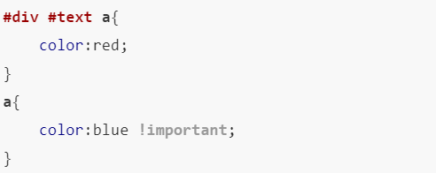

css(cascading style sheets)，层叠样式表，就是美化网页的。
css样式：由选择符和声明构成，声明是由属性名和属性值构成
p{
color :red;
font-size:20px;
}
<head>
<style>
p{
color:red;
font-size:20px;
}
</style>
</head>
index.css文件如下
p{
color:red;
font-size:20px;
}
内联式>嵌入式>外部式(嵌入式与外部式要看设置顺序)
太简单，没啥要说的
可继承的属性
选择器存在权重，权重决定了优先级
| 选择器 | 权值 |
|---|---|
| 标签 | 1 |
| 类 | 10 |
| id | 100 |
| 内联样式 | 1000 |
可以数各类型选择器的数量:id/类/标签
注意:会破坏权重规则，慎用
